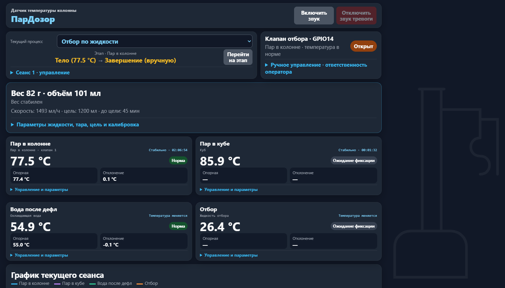
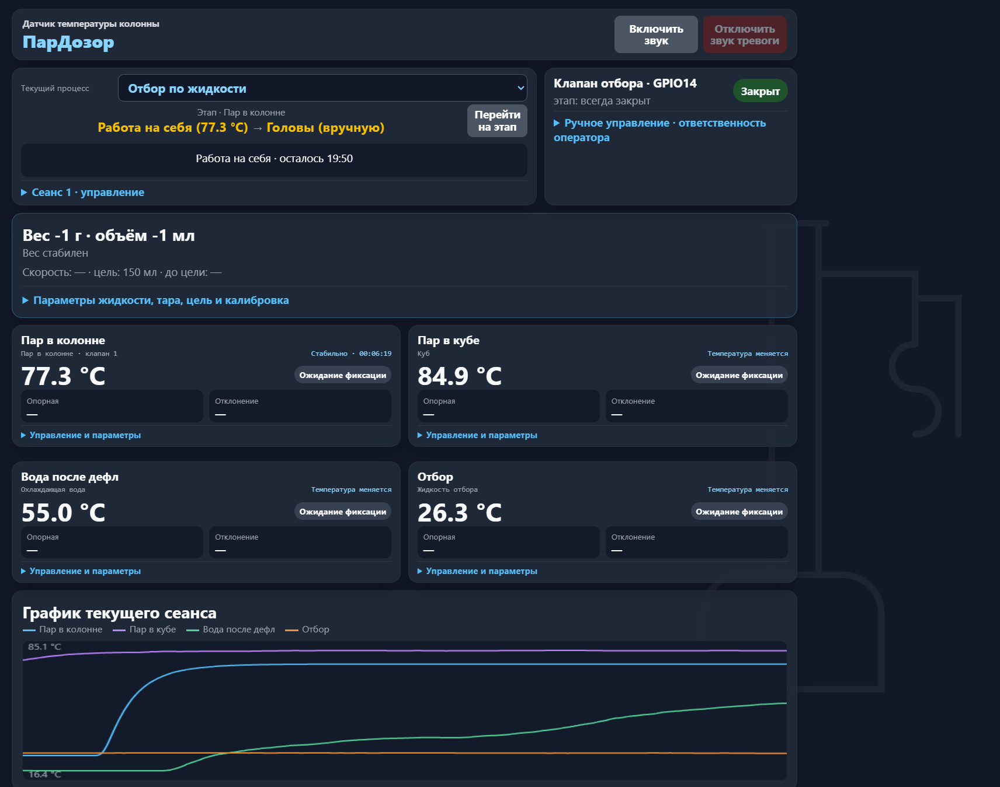
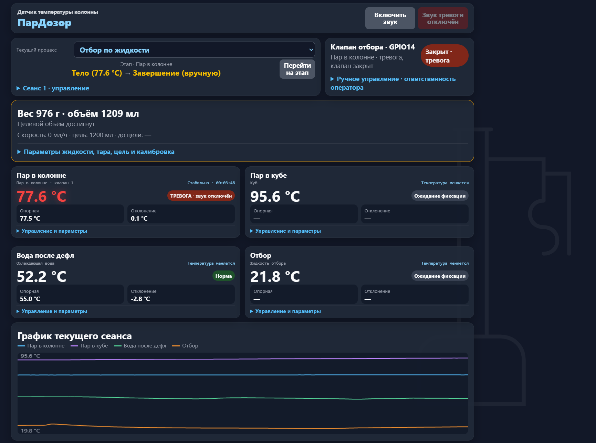

Температура и отклонение
До четырёх точек измерения с ролями, опорными значениями и видимыми состояниями контроля.
ПарДозор объединяет температуры, этапы отбора, вес и события в одном понятном интерфейсе. Откройте демо и пройдите реальный стендовый сеанс от нагрева до завершения.
Демо воспроизводит запись испытания. Оно не управляет оборудованием.

Текущая картина, динамика и причины тревог доступны вместе. Не нужно собирать их по разным приборам.
До четырёх точек измерения с ролями, опорными значениями и видимыми состояниями контроля.
Нагрев, работа на себя, головы, тело и завершение — текущий и следующий этап всегда на виду.
Расчётный объём, скорость в мл/ч и время до цели. Крепость и температура жидкости задаются оператором.
Цель достигнута, температура вышла за пределы, требуется внимание — состояние выделяется цветом и сообщением.
На стендовом испытании 30 октября 2026 года устройство прошло пять этапов. На графике видно нагрев, устойчивое плато, изменение температуры куба и набор объёма. Переходы между этапами этого сеанса выполнял оператор.
Посмотреть запись по минутам →Это не рекламные макеты. Снимки сделаны в ходе испытания устройства.


Начать знакомство можно без устройства: в демо воспроизводятся показания одного настоящего сеанса.
Перейти к демо ↗Выберите момент сеансаПеремотайте запись или перейдите сразу к нужному этапу.
Следите за показаниямиСравните температуры, вес, объём и изменения на графике.
Посмотрите событияПерейдите к достижению цели или температурной тревоге и оцените, как это показано оператору.
Без регистрации, установки и подключения к устройству.